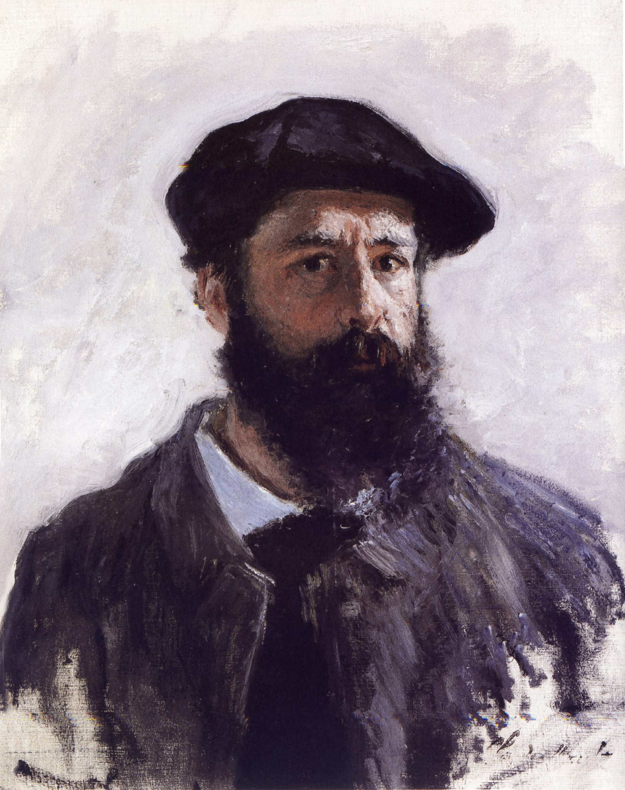

CLAUDE MONET
INTRODUCTION

Oscar-Claude Monet was a French painter and founder of impressionist painting who is seen as a key precursor to modernism, especially in his attempts to paint nature as he perceived it.
During his long career, he was the most consistent and prolific practitioner of impressionism's philosophy of expressing one's perceptions before nature, especially as applied to plein air (outdoor) landscape painting.
The term "Impressionism" is derived from the title of his painting Impression, soleil levant, exhibited in the 1874 ("exhibition of rejects") initiated by Monet and his associates as an alternative to the Salon.